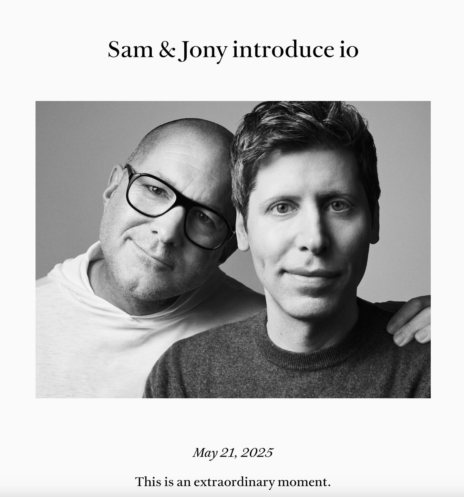
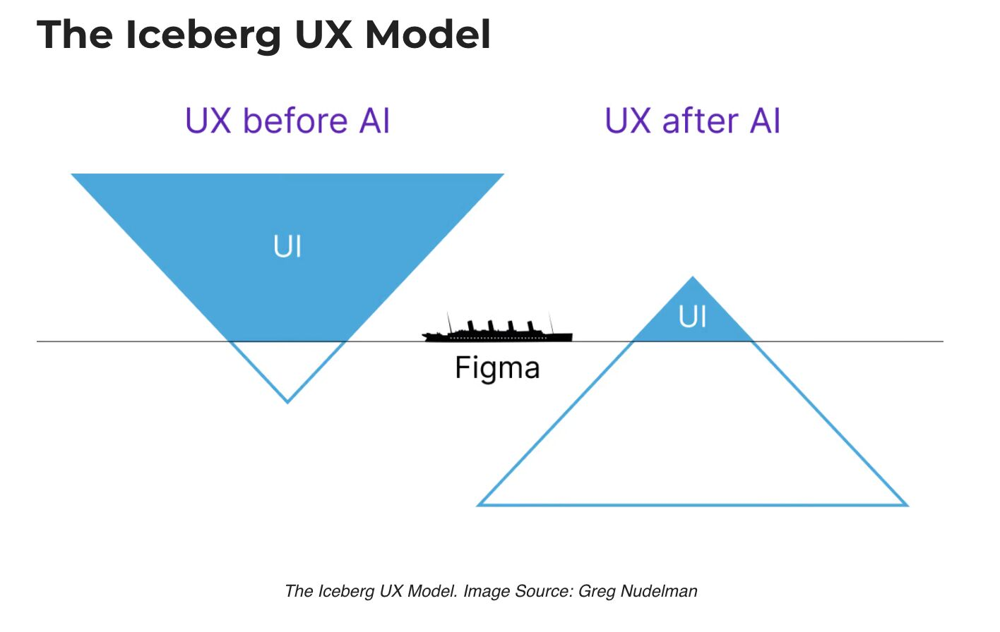

Designing for the Post-Screen Era

Last week’s news of Jony Ive’s "io" company is partnering with OpenAI on a $6.5B venture that has rocked the tech and design world. Like many, I’ve been imagining what this next “can’t-live-without” device might be.
I believe it will be a multimodal device handling: voice, touch, text, gesture, and vision. I also believe it won’t be a wearable device due to Jony’s stance against tying our bodies to technology and feeding our addiction to it.
This new kind of experience will require deeper UX thinking than UI: button shapes and colours won’t matter as much anymore when interacting with this new kind of device. Accessibility, smooth interaction and intent based design will be core features.
Will this mean the end of branded UI/UX? I don’t think so. But it will likely be radically simplified. Brand expression may shift from bold visuals to subtler elements like motion, tone, and feel.
I’ve written before about the rise of invisible design, and this news only reinforces that we’re entering a new era.
IO says they will release their device next year. Any guesses what this device will be like?

Sources:
Quiet Tech and Invisible Design is the next wave of Experience Design
Second image is from: AI Is Flipping UX Upside Down: How to Keep your UX Job, and Why Figma is a Titanic (It’s Not for the Reasons You Think)